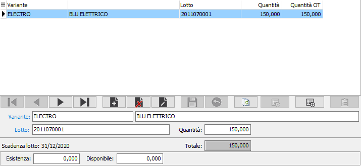
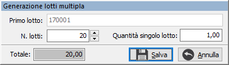
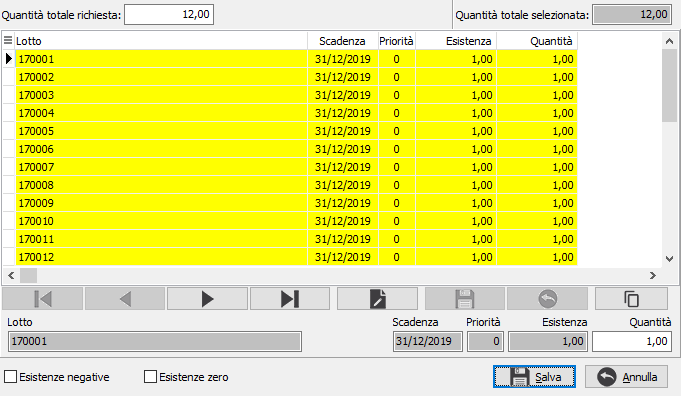

Dettaglio quantità su rientro c/to lavoro
 Se
la gestione del dettaglio quantità è attiva e collegata al rientro, non
sarà possibile inserire manualmente la quantità del rientro o dei
componenti, ma al momento di accedere al campo quantità, o con l'apposito
bottone dettaglio si aprirà la seguente finestra nella quale è possibile
inserire o manutenere il dettaglio delle quantità per singoli lotti relativi
al prodotto che è presente sul rigo del documento o singole varianti o
singole ubicazioni in base a come configurato sul prodotto. Nel caso il
dettaglio contenga sia la variante che il lotto, sarà sufficiente inserire
almeno uno dei due elementi; nel caso venga inserita solo la quantità
saranno utilizzati per il salvataggio i valori di variante, lotto e/o
ubicazione base se inseriti nelle configurazioni, altrimenti si dovrà
obbligatoriamente inserire un codice. Nella griglia viene mostrata anche
la quantità derivante da ordine terzista se il rigo su cui ci troviamo
deriva da ordine.
Se
la gestione del dettaglio quantità è attiva e collegata al rientro, non
sarà possibile inserire manualmente la quantità del rientro o dei
componenti, ma al momento di accedere al campo quantità, o con l'apposito
bottone dettaglio si aprirà la seguente finestra nella quale è possibile
inserire o manutenere il dettaglio delle quantità per singoli lotti relativi
al prodotto che è presente sul rigo del documento o singole varianti o
singole ubicazioni in base a come configurato sul prodotto. Nel caso il
dettaglio contenga sia la variante che il lotto, sarà sufficiente inserire
almeno uno dei due elementi; nel caso venga inserita solo la quantità
saranno utilizzati per il salvataggio i valori di variante, lotto e/o
ubicazione base se inseriti nelle configurazioni, altrimenti si dovrà
obbligatoriamente inserire un codice. Nella griglia viene mostrata anche
la quantità derivante da ordine terzista se il rigo su cui ci troviamo
deriva da ordine.
Nel caso in cui da questa
finestra non sia possibile intervenire sui dati presenti, significa che
la quantità del rigo di origine non è modificabile, perchè il rigo deriva
dall'evasione di un ordine terzista.
Se gestiti i lotti ed impostato
in configurazione lotti l'apposito parametro, sarà effettuata, in fase
di inserimento, la generazione automatica; accedendo in modo automatico
alla finestra di assegnazione ed inserendo
la quantità saranno selezionati i lotti in base alla priorità, presente
sul prodotto, ed alla giacenza.


 In caso di movimenti
di carico e non sono già presenti dettagli inseriti, se configurata la
codifica automatica del lotto e la creazione lotti multipla è presente
questo bottone alla cui pressione si apre una finestra in cui viene proposto
il codice del primo lotto e richiesto il numero di lotti da creare e la
quantità di ciascun lotto. Al momento in cui si conferma l’operazione
vengono create le anagrafiche dei lotti secondo il calcolo stabilito in
configurazione e generate le righe del dettaglio quantità.
In caso di movimenti
di carico e non sono già presenti dettagli inseriti, se configurata la
codifica automatica del lotto e la creazione lotti multipla è presente
questo bottone alla cui pressione si apre una finestra in cui viene proposto
il codice del primo lotto e richiesto il numero di lotti da creare e la
quantità di ciascun lotto. Al momento in cui si conferma l’operazione
vengono create le anagrafiche dei lotti secondo il calcolo stabilito in
configurazione e generate le righe del dettaglio quantità.
All'uscita dalla finestra di dettaglio, il totale del dettaglio sarà
riportato automaticamente nel campo quantità del rigo corrente del documento.
Se è attiva la gestione
dei lotti sarà visualizzato il pulsante di Assegnazione.
 Il pulsante attiva la finestra di assegnazione lotti,
se esistono lotti con esistenze positive per il prodotto attivo.
Il pulsante attiva la finestra di assegnazione lotti,
se esistono lotti con esistenze positive per il prodotto attivo.

La finestra consente l'assegnazione dei lotti esistenti, in modo manuale,
utilizzando il campo quantità in basso per indicare la quantità da utilizzare
per quel lotto, oppure in modo automatico utilizzando il campo quantità
totale richiesta, dove inserire  la quantità massima
selezionabile ed il pulsante di Assegnazione. La pressione del pulsante
effettua un conteggio sui lotti visualizzati, nell'ordine previsto sul
prodotto, selezionando le quantità esistenti fino ad arrivare al valore
inserito nel campo quantità totale richiesta; i lotti selezionati per
il totale dell'esistenza appariranno evidenziati di giallo, quelli selezionati
parzialmente di un colore diverso. La pressione del pulsante Salva effettuerà
l'assegnazione definitiva. Nella finestra è possibile visualizzare anche
i lotti con esistenza zero o negativa spuntando le relative caselle.
la quantità massima
selezionabile ed il pulsante di Assegnazione. La pressione del pulsante
effettua un conteggio sui lotti visualizzati, nell'ordine previsto sul
prodotto, selezionando le quantità esistenti fino ad arrivare al valore
inserito nel campo quantità totale richiesta; i lotti selezionati per
il totale dell'esistenza appariranno evidenziati di giallo, quelli selezionati
parzialmente di un colore diverso. La pressione del pulsante Salva effettuerà
l'assegnazione definitiva. Nella finestra è possibile visualizzare anche
i lotti con esistenza zero o negativa spuntando le relative caselle.